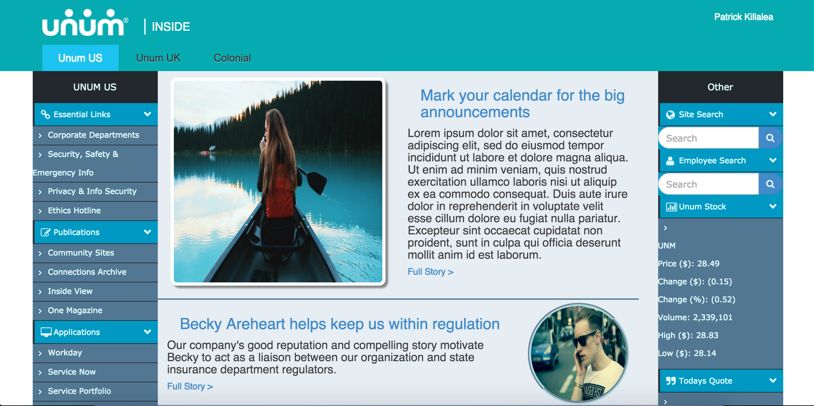
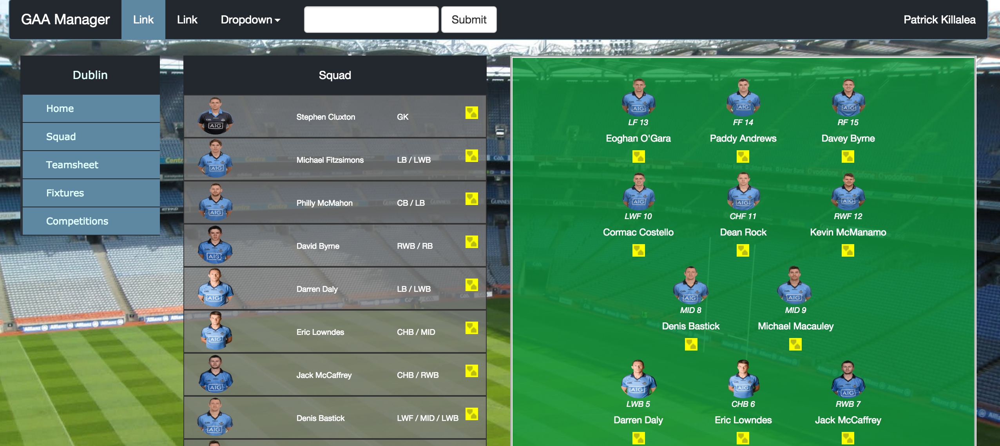

Hi! I'm Patrick, a Software Developer with over 4 years development experience at Unum, an American Insurance Company
Here you can view some of the projects I've been part of
both during my time at Unum and in my own free time.
Personal Web Apps
The following is a couple of web based applications which I have worked on in my own time.

The Rosh Pit
The Rosh Pit was built on Bootstrap and the MEAN stack (Mongodb, Express, Angular, Node). I am using Heroku to host it online and my database is on MongoLab. All code is stored on GitHub. You can view both the website and source code in the links below.

Charity Comparer
This site was built with help from one of my friends who works in Concern. We were concerned that the charity scandals of recent years were taking its toll on donations in Ireland and wanted to do something to counteract it. We decided to create a website which rates all Irish charities and compares them against each other by using fancy visualizations.
Charity Comparer
We take the information that charities publish in their annual reports and standardise it. This means you can see what your favourite charity is doing with your donation. And you can compare it with other charities. This was one of the first personal websites I created. You can see it and the code in the links below.

Job Portal
I am building this as a way to improve and modernize the user experience of the Unum homepage for internal staff. This website uses company specified styling to simulate the same look and feel of other company websites and is fully responsive unlike the current site.
Job Portal
I have used bootstrap and javascript up to this point to get it looking the way it is to show how the UX would feel. When I have time I would like to build the style into an application framework and allow administrators add new pages or news articles. You can see my progress and the source code in the links below.

Football Manager
Football Manager
Unum Web Apps
The following is a couple of web based applications which I have worked on in my time at Unum.

Sniper
Sniper provides self service for workarounds defined by problem management. These workarounds are implemented as temporary fixes to allow the business process to proceed with minimal interruption to service. Sniper temporary fixes are released when repetitive incident of the same data fix are identified.
Sniper
Sniper was built to be system agnostic so that adding a new system to our tool would be simple. We used Hot Towel as our framework which includes Bootstrap, Angular, Knockout, Breeze and SQL. Heavy use of SQL and Stored Procedures was used to allow the website to be as data driven as possible. This project has 8 developers based in US and Ireland.
Mapper Mobile
Mapper Self Serve is a Unum web application which allows business users who are discussing a clients data feed needs to create a sample file for the client which they can email to IT. Doing this saves a large amount of testing time and shows prospective clients that we have the ability to deliver exactly what the want.
Mapper Mobile
This was a responsive web based application which we created to aid Unum Business Analysts while collecting requirements from customers on their data file needs with a view to minimizing unexpected data formats. The application used JQuery, Ajax, JSON, SQL and IIS. It is currently used by 10+ analysts.
EDI On Call
The majority of EDI files created are highly important and time critical, for example payroll files. Thus it was essential that any job failures were rectified quickly. This web based application allowed on call EDI support analysts diagnos job failures through their on call phone or tablet and perform resolution on the go.
EDI On Call
This was a responsive web based application using JQuery, Ajax, JSON, SQL and hosted through IIS. TFS was used for Source Control and for Project Management. We had 5 people working on the project over the course of about 3 months. It is currently used by 6 on call support analysts.
Tech Radar
Tech Radar is a visualization tool which allows the Vendor Products team to show what products they are bringing into the organization and at what stage they are at. Having a tool like this increases the teams visibility throughout the organization and allows individuals to see work being done.
Tech Radar
This project was built using bootstrap and angular and uses an XML file.
Unum SQL Projects
Mapper Self Serve is a Unum web application which allows business users who are discussing a clients data feed needs to create a sample file for the client which they can email to IT. Doing this saves a large amount of testing time and shows prospective clients that we have the ability to deliver exactly what the want.
I acted as Scrum Master for this project leading a team of 4 developers. We wanted the app to be as user friendly as possible so we built it to look like an iPhone/iPad app using JQuery and interacting with a SQL database using Ajax.